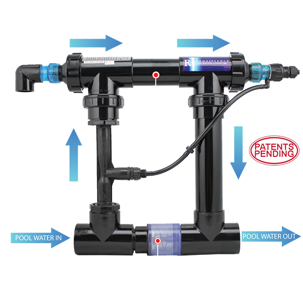
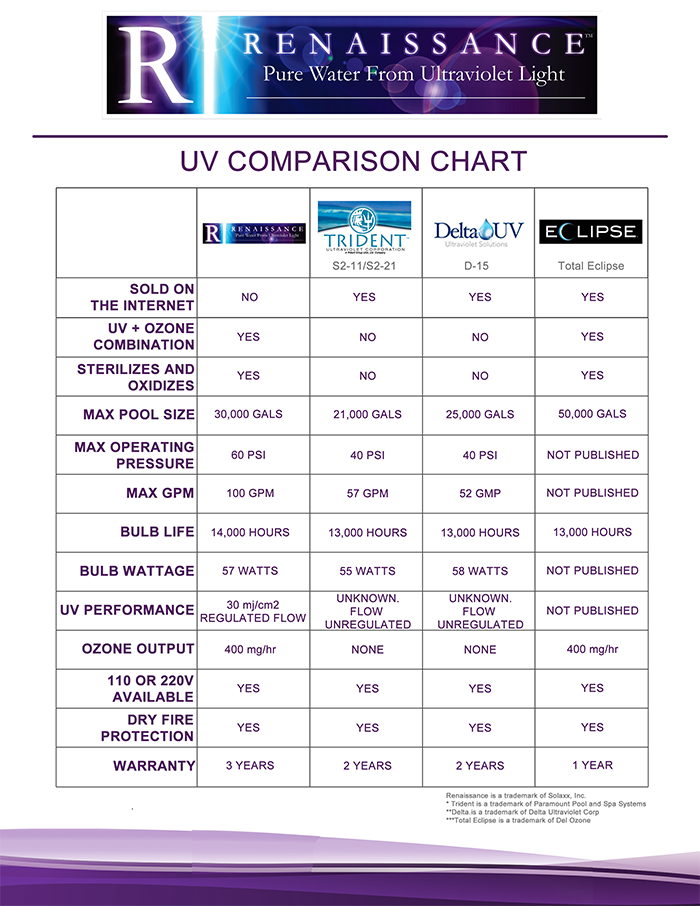
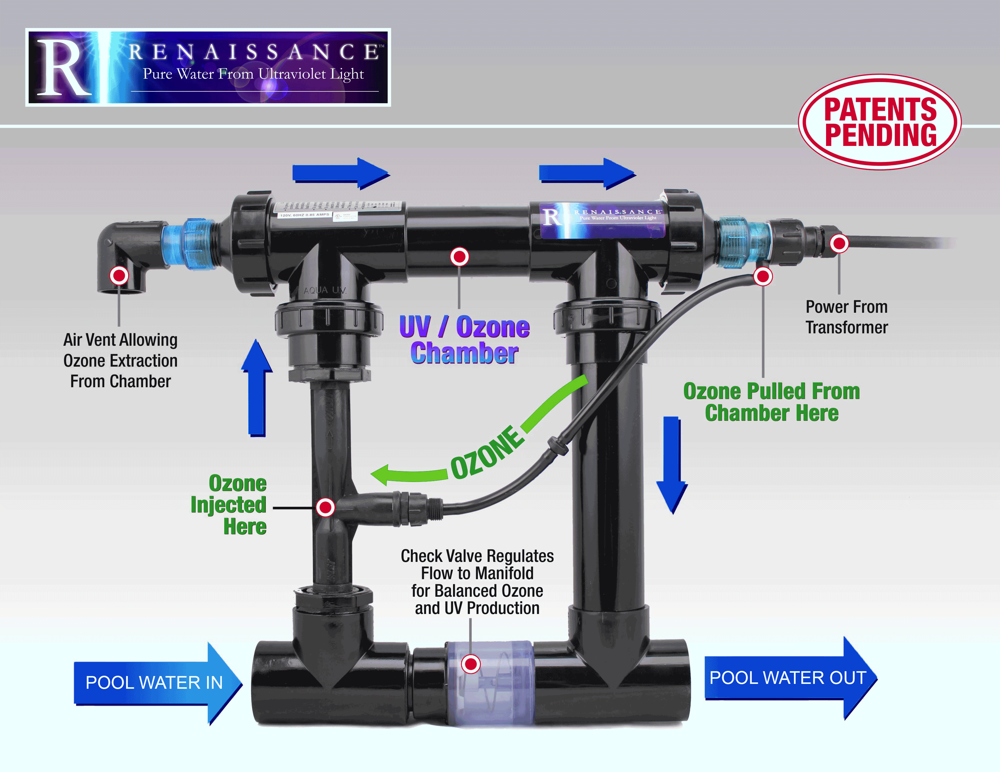
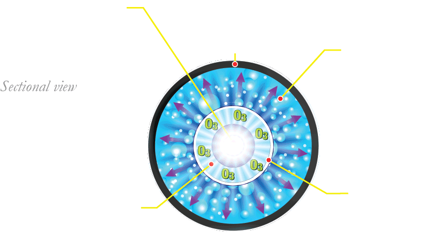
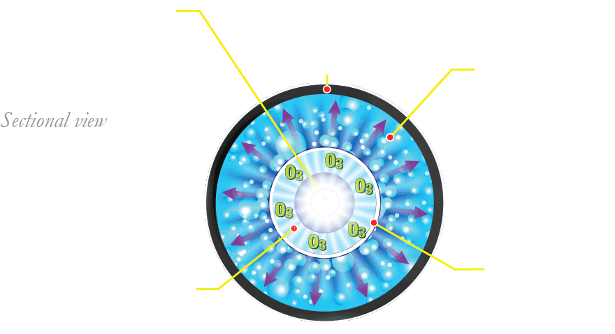
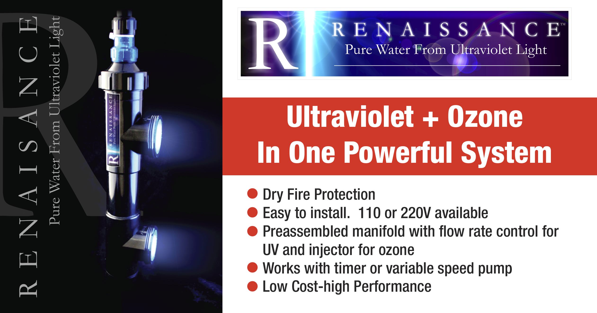

Your browser doesn't support the features required by impress.js, so you are presented with a simplified version of this presentation.
For the best experience please use the latest Chrome, Safari or Firefox browser.
The first functional water sterilization system specifically designed for residential
swimming pools. Combining UV irradiation with the oxidation power of Ozone, Renaissance will sterilize pool water to eliminate 99.99% of organic
materials at flow rates from 20gpm-100gpm.
HOW IS RENAISSANCE DIFFERENT THAN OTHER SYSTEMS OF THIS TYPE?
There are two primary
differences:
First is the ability of Renaissance to properly regulate water flow through the sterilization chamber at flow rates from 20-100gpm.
The patent pending design diverts the proper amount of flow through the sterilization chamber regardless of the pump size or setting.

SECOND
is the patent pending design brings the price down so the entire UV/Ozone system costs about the same
as a systems that provide only UV or Ozone alone.
LETS LOOK AT THE CHART

HOW DOES THE SYSTEM WORK?
Using the existing pool pump, water is circulated through the UV/Ozone chamber containing a special bulb that produces both UV light and Ozone. Water is sterilized in the chamber while Ozone is siphoned off the bulb by a special patented process and injected into the water flow as well. There are no moving parts. The Renaissance bulb has a life expectancy of 14,000 hours and costs less than $100 to replace.

HOW DOES THE SYSTEM WORK?
Using the existing pool pump, water is circulated through the UV/Ozone chamber containing a special bulb that produces both UV light and Ozone. Water is sterilized in the chamber while Ozone is siphoned off the bulb by a special patented process and injected into the water flow as well. There are no moving parts. The Renaissance bulb has a life expectancy of 14,000 hours and costs less than $100 to replace.
WHAT HAPPENS INSIDE THE STERILIZATION CHAMBER?

When water is exposed to UV light at a specific wavelength, organic contaminants such as bacteria, algae and viruses are sterilized.
This UV light renders contaminants sterile and not harmful to humans, which is why hospitals, doctors and dentists use UV light
to sterilize their instruments.
THAT OZONE! ITS SO HOT RIGHT NOW!!
Ozone is a gas and is a very powerful oxidizer, 200 times more powerful than chlorine.
Ozone molecules react with organic contaminants in water and oxidize them out of the water quickly and efficiently.
WITH BOTH COMBINED!

When these two processes are used in combination, it produces hydroxyl free radicals inside the chamber
which is called the Advanced Oxidation Process (AOP). The result is the purest, healthiest water that can be achieved only
when using UV and Ozone together.

Destroy contaminates no matter how big or...
Lets see how it all works!